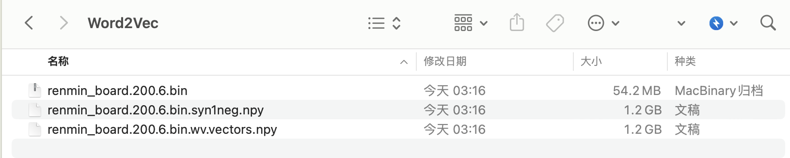

本文使用 3.88G 语料训练得到词汇量近 150w 的 Word2Vec 模型，使用该模型，可以用于寻找近义词，扩展(构建)概念词典。 该Word2Vec模型文件可在文末免费下载
一、构建语料
使用 数据集(付费) | 人民网地方领导留言板原始文本(2011-2023.12) 来构建本文的语料。
import pandas as pd
df1 = pd.read_csv('2011-2019.csv.gzip', compression='gzip')
df2 = pd.read_csv('2020-2023.csv.gzip', compression='gzip')
text_series1 = df1['留言内容'] + df1['回复内容']
text_series1.fillna('', inplace=True)
text_series2 = df2['留言内容'] + df2['回复内容']
text_series2.fillna('', inplace=True)
with open('renmin_board.txt', 'a+', encoding='utf-8') as f:
text = ''.join(text_series1.tolist()) + ''.join(text_series2.tolist())
f.write(text)
最终得到 3.88 G 的 renmin_board.txt 。
二、训练模型
2.1 配置cntext
使用 cntext 2.0.0 或者 cntext 2.1.0 ， 已购买 cntext2.0.0 的同学可以找我更新至 2.1.0 ，微信372335839， 备注「姓名-学校-专业」。
将 cntext-2.1.0-py3-none-any.whl 放置于桌面， 打开 **命令行cmd **(苹果电脑terminal)，依次执行以下命令
cd desktop
pip3 install cntext-2.1.0-py3-none-any.whl
2.2 训练Word2Vec
训练 word2vec 代码已封装 cntext2， 所以代码很简洁，只有三行代码。
训练环境win11, 内存128G。
import cntext as ct
w2v_model = ct.W2vModel(corpus_file='renmin_board.txt', lang='chinese')
w2v_model.train(window_size=6, vector_size=200)
Run
renmin_board.txt
Start Preprocessing Corpus...
Start Training! This may take a while. Please be patient...
Training word2vec model took 12779 seconds
Note: The Word2Vec model has been saved to output/Word2Vec
使用 3.88G 的renmin_board.txt，训练了 12779 秒， 约 3.5 小时。在Python代码文件所在的文件夹内，出现了 output/Word2Vec 文件夹，打开可以看到训练好的模型， 可以看出模型文件的体量还是很大的。

三、使用模型
3.1 读取模型
import cntext ct
w2v = ct.load_w2v('output/Word2Vec/renmin_board.200.6.bin')
w2v
Run
Loading word2vec model...
<gensim.models.word2vec.Word2Vec at 0x2a11dfad0>
3.2 模型词汇量
#词汇量
len(w2v.wv)
Run
1499961
3.3 查看词表
因为词表有 1499961 个词， 为了方便，这里只显示前20个词
##词表带顺序的
list(w2v.wv.key_to_index.keys())[:20]
Run
[' ',
'\n',
'问题',
'进行',
'小区',
'工作',
'”',
'没有',
'情况',
'目前',
'反映',
'业主',
'项目',
'要求',
'“',
'公司',
'网友您好',
'现在',
'建设',
'反映问题']
3.4 获取某词的向量
#w2v.wv['利民']
w2v.wv.get_vector('利民')
Run
array([-0.72336054, 0.5448769 , 0.02187554, 0.18723099, 0.10518928,
-0.4829346 , 1.2029709 , 1.325142 , 1.7153364 , -0.9134816 ,
0.21033671, -0.05412149, 0.1750608 , 0.36092624, 0.24550831,
0.02644009, 0.95183885, -1.0317421 , -0.10972459, -2.5780423 ,
-0.89232576, -1.043176 , 0.72673726, -0.17512426, -0.24233247,
0.2569658 , -1.0063888 , 0.5180029 , 0.83510065, 0.8907923 ,
-0.24386375, -0.53083295, -1.5156878 , -0.9040948 , 0.25330988,
-0.79177266, 0.06866979, 0.6199285 , 0.9562961 , 3.6091647 ,
-1.3558179 , 1.4279033 , -0.6923549 , 0.17637855, 0.6416902 ,
0.8726301 , -0.8316238 , 0.8974303 , -1.342718 , 0.3960099 ,
0.7404184 , 0.41476634, 0.5397854 , -0.9964916 , 0.72252625,
-0.24338841, -1.1583921 , -0.8719721 , -0.1476895 , 0.4893649 ,
1.0152714 , -3.2469108 , 0.61867106, -1.1033677 , 0.7277995 ,
0.68194056, 1.9562886 , -2.0847485 , 1.5790684 , 0.9881281 ,
-1.6833613 , 0.52788144, 0.81453127, -0.72605026, 0.67317885,
0.4130878 , 0.5682669 , -0.14777663, 0.6144105 , -0.6402672 ,
-0.8752994 , 1.6374044 , -0.66893923, 0.5865543 , 0.6375472 ,
-0.99829054, -1.0806116 , 2.6740906 , -0.7968034 , -0.39872456,
-2.0882657 , 0.4091569 , 0.44333985, 0.80311924, -0.02302606,
-0.2762922 , 0.172768 , 2.2813802 , -0.39281502, 0.57268375,
1.4626628 , -0.14473361, 0.5739576 , 0.61773837, -0.18331125,
1.2602748 , 0.9424055 , 1.5969577 , 0.6106542 , -2.7610633 ,
-1.1409078 , -1.7803516 , -0.3264908 , 1.2968934 , 0.7250817 ,
0.0589628 , 0.42458364, -0.3242822 , -2.6474693 , 0.3660026 ,
0.5749114 , 0.1812738 , 0.34291452, -0.20228535, 0.40417868,
0.06284425, 0.7266579 , 1.5118539 , 2.0363107 , -1.1808697 ,
-0.19834429, -1.105297 , 0.7594476 , -0.90230256, 0.13537973,
1.5452795 , 1.3571783 , 0.15807565, -1.0794616 , 2.3592122 ,
0.62628454, -0.61704504, 0.65674806, -0.91116625, -2.1521432 ,
-0.08805666, -0.6956923 , -1.4443843 , -0.84095645, 0.64748996,
-0.7432282 , 1.7160741 , 1.1697325 , 1.0834908 , -1.0323627 ,
-1.3480235 , 1.004517 , -0.40515316, 0.38016117, 1.6717825 ,
-0.40651798, 1.0373042 , 0.24744533, -2.353417 , 0.06758213,
0.34440002, 0.8656946 , 0.76431715, -1.7378451 , 1.2329959 ,
-1.4538856 , 1.0956937 , 0.6151345 , 2.4905207 , -0.24415112,
-0.23886327, 0.09834331, 0.00791643, -0.53527415, 0.7039957 ,
0.83675224, -1.5712336 , -0.14135051, 0.34811664, 0.41304144,
0.78504366, -0.13325912, -0.9898512 , -0.497319 , -0.32992417,
-0.58120775, 0.29686695, -0.9618549 , 0.39253774, 0.14620592,
-0.45337242, 0.69179136, 0.1934781 , -2.0494404 , 1.8545331 ],
dtype=float32)
需要注意，如果查询的词不存在于模型词表，则会出现报错。例如
word = '这是一个不存在的词'
w2v.wv.get_vector(word)
Run
---------------------------------------------------------------------------
KeyError Traceback (most recent call last)
Cell In[130], line 2
1 word = '这是一个不存在的词'
----> 2 w2v.wv.get_vector(word)
File /Library/Frameworks/Python.framework/Versions/3.11/lib/python3.11/site-packages/gensim/models/keyedvectors.py:446, in KeyedVectors.get_vector(self, key, norm)
422 def get_vector(self, key, norm=False):
423 """Get the key's vector, as a 1D numpy array.
424
425 Parameters
(...)
444
445 """
--> 446 index = self.get_index(key)
447 if norm:
448 self.fill_norms()
File /Library/Frameworks/Python.framework/Versions/3.11/lib/python3.11/site-packages/gensim/models/keyedvectors.py:420, in KeyedVectors.get_index(self, key, default)
418 return default
419 else:
--> 420 raise KeyError(f"Key '{key}' not present")
KeyError: "Key '这是一个不存在的词' not present"
3.5 查询近义词
w2v.wv.most_similar(positive=None, topn=10)
- positive 待查的词语列表或者词向量
- topn 显示返回多少个近义词
3.5.1 使用词语列表查询
w2v.wv.most_similar(['经济', '建设', '发展'],
topn=20)
Run
[('经济发展', 0.7514141201972961),
('产业发展', 0.6954267024993896),
('发展壮大', 0.6707271337509155),
('社会发展', 0.6637671589851379),
('发展重要', 0.6603672504425049),
('城镇化发展', 0.6574274301528931),
('城市发展', 0.6558148264884949),
('高质量发展', 0.6517276167869568),
('大力发展', 0.6500106453895569),
('产业', 0.6494895219802856),
('发展产业', 0.6458864212036133),
('壮大', 0.6379123330116272),
('发展带动', 0.6357436776161194),
('未来发展', 0.6351119875907898),
('第三产业', 0.6345765590667725),
('经济增长', 0.6329594850540161),
('改革开放', 0.6297498345375061),
('融合发展', 0.6290864944458008),
('长远发展', 0.6279110908508301),
('经济繁荣', 0.627375602722168)]
3.5.2 使用词向量查询
先构建一个函数concept_vector，该函数可以将多个词转化为一个向量。 遇到词语不在词表中的异常，也能正常运行。
import numpy as np
def concept_vector(words):
container = np.zeros(200)
for word in words:
try:
container = container + w2v.wv.get_vector(word)
except:
pass
return container/len(words)
word_vec = concept_vector(words=['她', '她们', '母亲', '奶奶', '女性', '女人'])
#查找与word_vec近义词10个词
w2v.wv.most_similar(word_vec,
topn=10)
Run
[('奶奶', 0.9064152836799622),
('母亲', 0.9003509879112244),
('爷爷', 0.8559296131134033),
('婆婆', 0.846263587474823),
('我妈', 0.8314375877380371),
('老伴', 0.8306034803390503),
('老父亲', 0.8257972598075867),
('姥爷', 0.8255906701087952),
('父亲', 0.821728527545929),
('女孩', 0.8210363984107971)]
四、 相关
4.1 文献资料
郑石明, 兰雨潇, 黎枫. 网络公共舆论与政府回应的互动逻辑——基于新冠肺炎疫情期间“领导留言板”的数据分析[J]. 公共管理学报, 2021, 18 (03): 24-37+169.
王磊,易扬.公共卫生危机中的数字政府回应如何纾解网络负面舆情——基于人民网“领导留言板”回复情况的调查[J].公共管理学报,2022,19(04):65-78+169.
Lu, Liangdong, Jia Xu, and Jiuchang Wei. "Understanding the effects of the textual complexity on government communication: Insights from China’s online public service platform." Telematics and Informatics 83 (2023): 102028.
...
4.2 代码资料
想用 python 对 csv、xlsx 进行分析， 要学会尽量用 pandas 写代码。 以下是近期 pandas 的一些处理推文免费教程， 感兴趣的可以进去浏览浏览。
数据集(付费) | 人民网地方领导留言板原始文本(2011-2023.12) 2023-12-22-renmin-gov-leader-comment-board
五、获取资料
5.1 免费资料
本文训练所得的 renmin_board.200.6.bin模型文件 免费开源，
链接: https://pan.baidu.com/s/1u-eUuATCTSIDjhOvSaG7sA?pwd=whf5 提取码: whf5
5.2 付费资料
1. 数据集(付费) | 人民网地方领导留言板原始文本(2011-2023.12) ，2000元
2. cntext2.1.0 价格100元，已购买2.0.0可免费更新至2.1.0
3. 数据是虚拟产品，一经售出，不再退还！
4. 大家时间其实都很宝贵，请仔细阅读推文内容， 确认无误再加微信372335839， 备注「姓名-学校-专业」详谈购买事宜